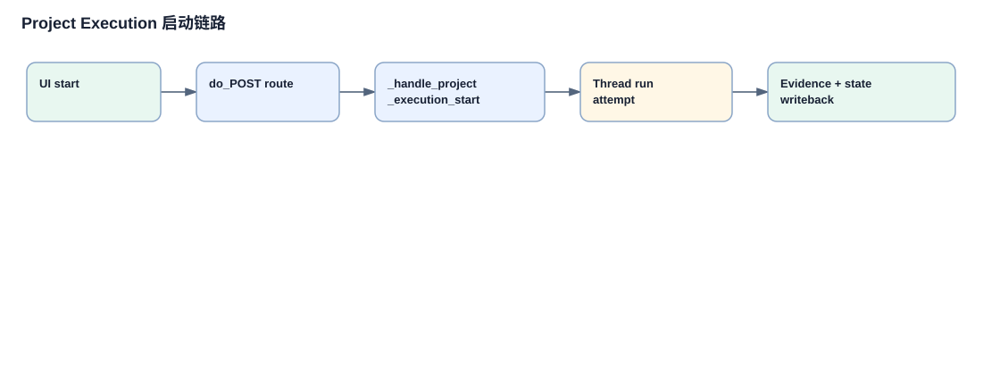

Project Execution attempt 运行链路
attempt 是一次任务执行的审计单元。它把执行角色、workspace 基线、provider 输出、文件变化、测试证据、评审结果和后续状态转移串起来，是整个项目执行总线最核心的链路。
详细链路说明
启动前校验
`_handle_project_execution_start` 输入 project_id、task_id、body，校验 workspace、执行/评审角色、git snapshot 和 dirty 状态，输出 workspace、roles、snapshot。
创建 attempt
生成 uuid attempt，写入 `task.attempts`、`activeAttemptId`、`workflowActive`、`workflowPhase`，保存项目状态。
启动后台线程
用 `threading.Thread(... _project_execution_run_attempt ...)` 异步运行，HTTP 请求可以快速返回 started。
构造 prompt
`_project_execution_build_prompt` 读取项目、任务、checklist、会议 action、archive context，输出 executor prompt。
调用 executor
`_project_execution_call_executor` 根据 providerKind 分派 Codex/Hermes/Claude Code/OpenClaw，输出 provider result。
采集 evidence
运行结束后重新取 git snapshot，合并 provider modifiedFiles，写 executorSummary、changedFiles、testResults、providerStatus、providerRef。
状态转移
根据 cancelled、result.ok、skipReview、autoReviewAfterExecution、requiresUserAcceptance 分流到 blocked、execution_complete、done、awaiting_user_acceptance 或 review。
调用链图

图中每个节点都对应 `app/server.py` 中的真实函数或 `provider_execution.py` 的归一化合同。
关键代码摘录
attempt 证据落库
evidence = {
"attemptId": attempt_id,
"executorSummary": _project_execution_redact(result.get("reply") or ""),
"changedFiles": sorted(set(final_snapshot.get("files", [])) | set(result.get("modifiedFiles") or []))[:200],
"providerStatus": result.get("status") or ("completed" if result.get("ok") else "execution_failed"),
}这段代码把 provider 输出、文件快照和执行状态汇总到任务 evidence，是后续评审和验收读取的基础。
provider 分发
if provider_kind == "codex":
return _handle_codex_chat({...})
if provider_kind == "hermes":
return _handle_hermes_chat({...})
if provider_kind == "claude-code":
return _handle_claude_code_chat({...})
reply = _wf_call_agent(agent_id, prompt, timeout=timeout, ...)Project Execution 不直接理解各 Agent 的原生命令，而是通过 providerKind 进入适配层。
分支、失败路径和数据变化
| 类型 | 说明 |
|---|---|
| 分支 | cancelled、result.ok false、skipReview、autoReviewAfterExecution、meetingActionPhase、checklist incomplete。 |
| 失败路径 | provider failure 或 cancel 进入 blocked；workspace invalid 在启动前返回 409；stale activeAttemptId 会让旧线程停止推进。 |
| 数据流 | project/task metadata -> prompt -> provider result -> git snapshot + parsed JSON -> evidence -> stateHistory/reviewHistory。 |
关键概念补充
1. attempt
出现位置：`app/server.py:_handle_project_execution_start`。一次任务执行尝试，承载基线、角色、证据和后续 review/rework 关联。
2. providerRef
出现位置：attempt evidence。它记录 providerKind、conversationId、threadId、runId 等，方便把执行证据追回具体 Agent 会话。